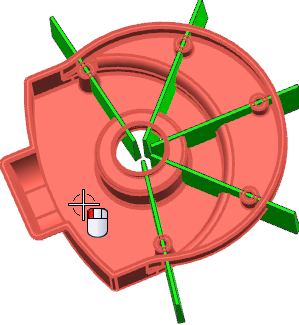
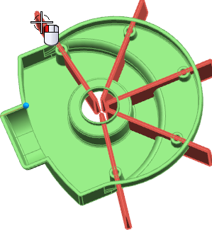
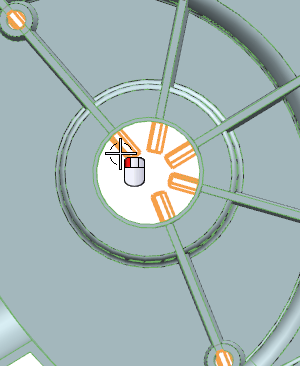
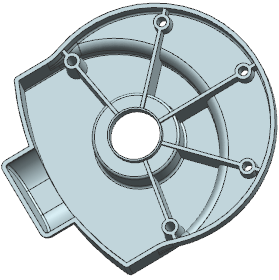

Define more regions to remove
The Unite dialog box should still be open; in the Target group, Select Body should be selected.
-
Select the solid body as shown.

-
On the Selection bar, from the Body Rule list, select Feature Bodies.
-
For the tool body, select the extrude feature as shown.

-
In the Region group, select the Define Regions
 check box.
check box.
-
Verify that Select Region and Remove are selected.
-
In the graphics window, select each of the overhanging sheet bodies as shown.

-
Select the sheet bodies overhanging the hole in the middle of the part.

-
Click the middle mouse button to complete the unite.

-
Close the part without saving.